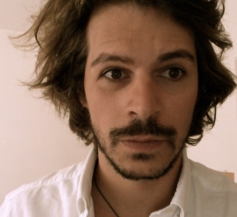

As a mathematician and machine learning researcher, I am constantly inspired by the foundational work of logicians and mathematicians who formalized the concept of computer programs less than a century ago. This fills me with both humility and enthusiasm!
Since July 2020, I am the scientific coordinator of the DEEL project and a member of the IID at Laval University.
I started in November 2019 at the Centre de recherche en données massives at Université Laval, Québec, as a postdoctoral scholar. From September 2018 to June 2019, I held postdoctoral position at the Department of Mathematics and Statistics of the McGill University in Montreal. From January 2017 to September 2018, I was an Early Postdoc.Mobility fellow of the Swiss National Science Foundation at the Department of Mathematics of the University of California Los Angeles. In 2016, I was a postodoctoral reseacher at the Kurt Gödel Research Center. I obtained my PhD in 2015 from both the University of Lausanne and the University Paris-Diderot for my dissertation "Better-quasi-order: Ideals and spaces" (See preamble here) which deals with combinatorics, order theory and descriptive set theory.
My research interests
- Machine Learning: Explainability, Robustness and Trustworthiness
- Descriptive set theory, Infinite games with perfect information
- Combinatorics, Well-quasi-order and better-quasi-order
- Computability, Effective Descriptive Set Theory, Computable analysis

Email: yann \dot pequignot \at gmail \dot comSouvenir from Santa Monica: Des Suisses à Hollywood: Yann Pequignot, mathématicien. Radio Télévision Suisse (RTS), Mai 2018.